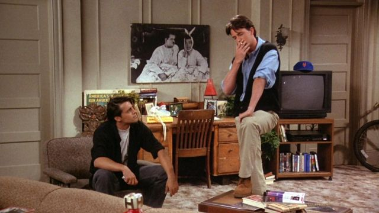
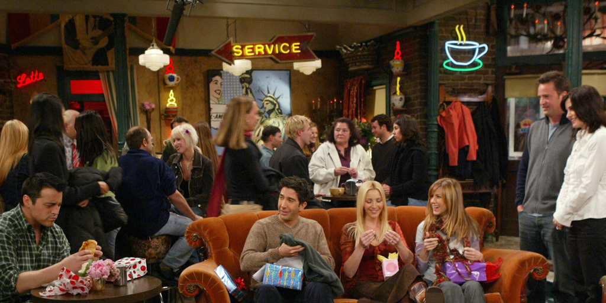
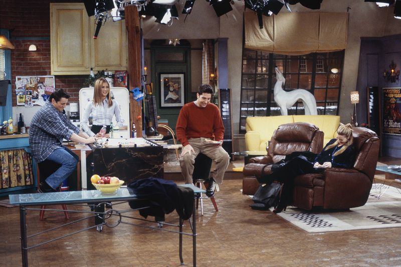
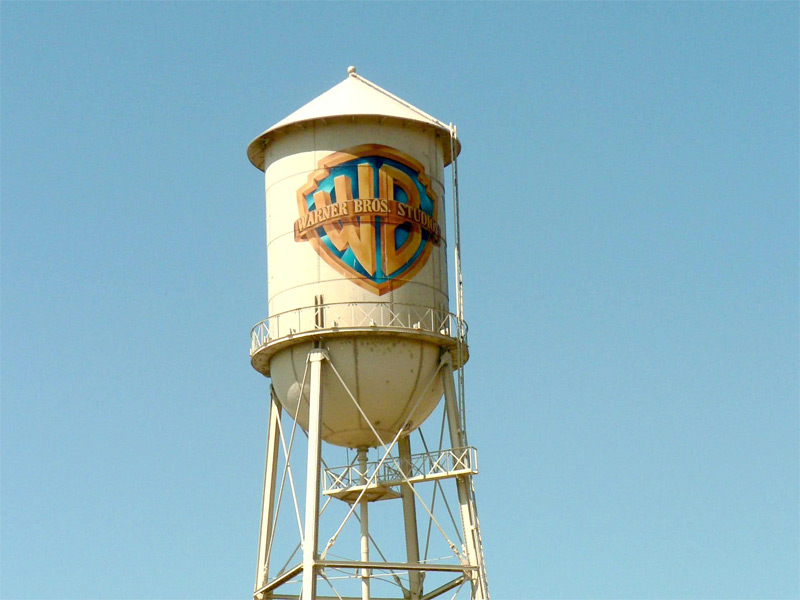
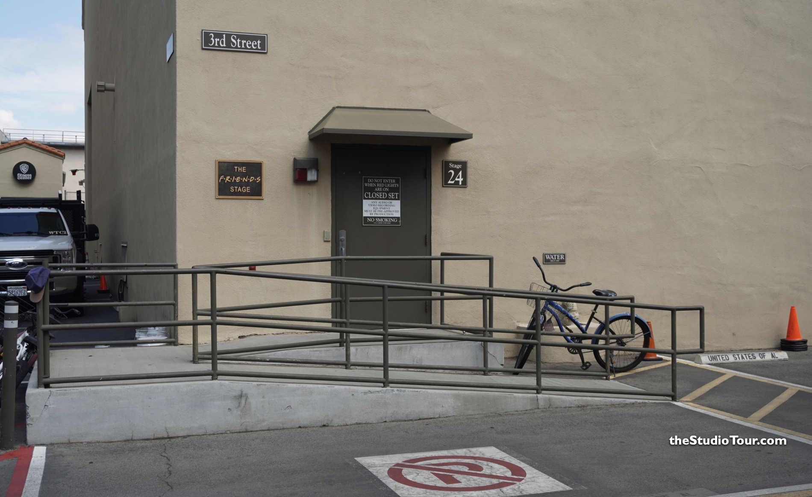
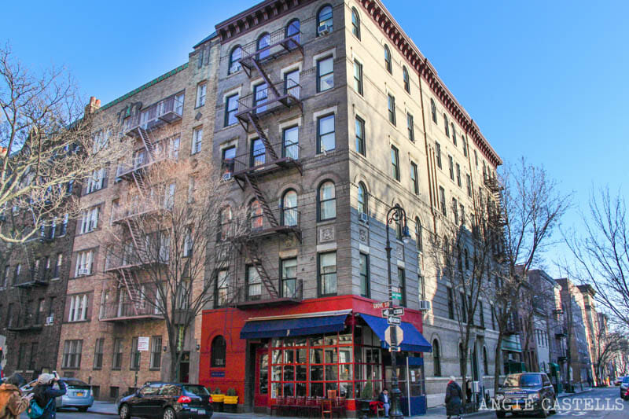
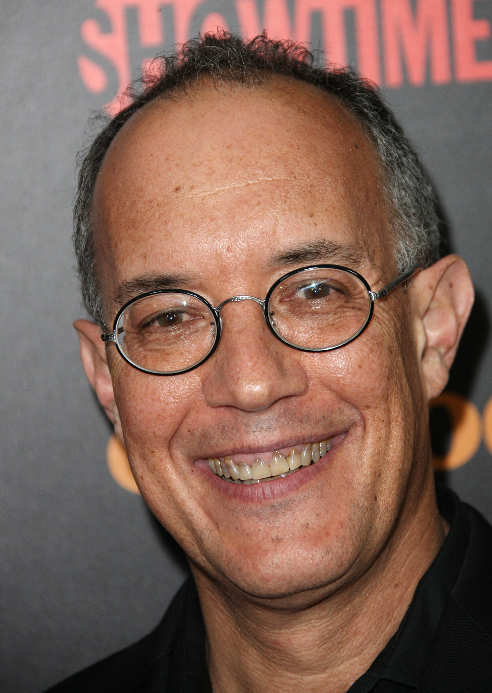
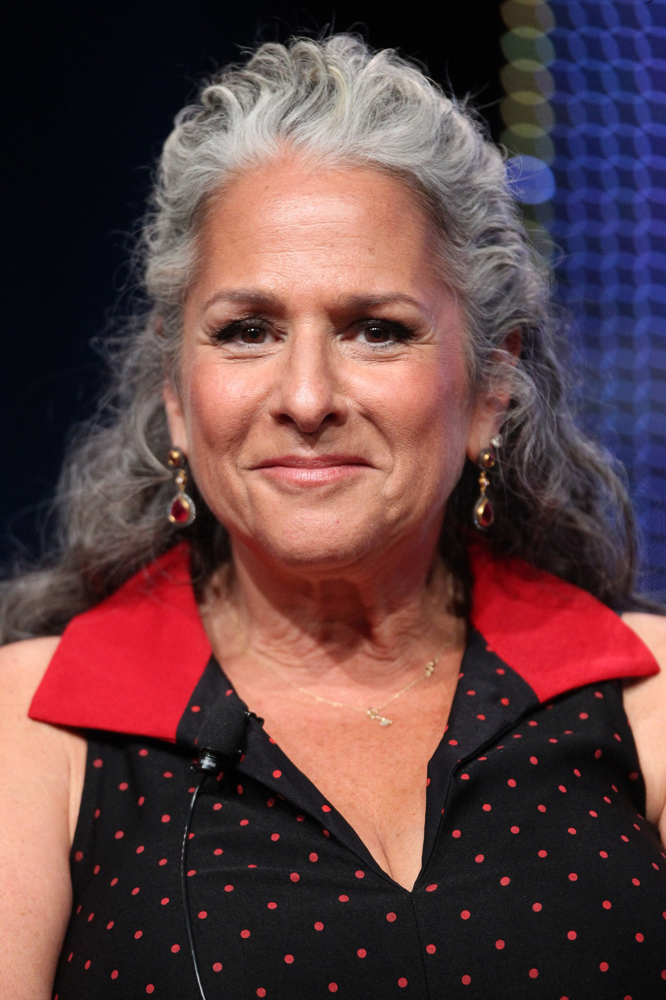

Breve introducción a la serie

"Friends" es una comedia de situación estadounidense que sigue la vida de seis amigos (Rachel, Ross, Monica, Chandler, Joey y Phoebe) que viven en Nueva York. A lo largo de diez temporadas, la serie explora sus relaciones amorosas, problemas laborales y desafíos personales, todo con un tono ligero y humorístico. La trama principal gira en torno a la evolución de sus amistades, romances (especialmente la relación intermitente entre Ross y Rachel) y el crecimiento individual de cada personaje mientras enfrentan la vida adulta.
Sinopsis y contexto
Sinopsis:
"Friends" narra la historia de seis jóvenes (Rachel, Ross, Monica, Chandler, Joey y Phoebe) que viven en Manhattan y atraviesan juntos las alegrías y dificultades de la vida adulta. Entre romances, rupturas, cambios de trabajo y momentos cómicos, su vínculo de amistad se convierte en el eje central de sus vidas. La serie sigue su crecimiento personal y las dinámicas cambiantes de su relación a lo largo de los años
Contexto:
"Friends" pertenece al género de comedia de situación. Su enfoque está en el humor cotidiano, los enredos emocionales y los lazos afectivos, todo ambientado en un entorno urbano realista como Nueva York de los años 90 y principios de los 2000.
Locaciones y Estudio de Grabación de Friends
Aunque Friends está ambientada en la ciudad de Nueva York, la mayor parte de la serie fue grabada en los estudios Warner Bros., ubicados en Burbank, California, Estados Unidos. Todos los escenarios principales, como el apartamento de Monica, el departamento de Joey y Chandler, y el icónico café Central Perk, fueron construidos y filmados en sets interiores diseñados especialmente para la serie dentro de los estudios.
  En particular, gran parte de Friends se grabó en el Stage 24 de Warner Bros., un estudio tan vinculado al éxito de la serie que, en honor a su legado, pasó a conocerse oficialmente como "The Friends Stage" después de que la serie concluyera en 2004.
 Si bien se utilizaron algunas tomas de exteriores reales para mostrar locaciones de Nueva York (como imágenes del edificio que supuestamente albergaba los apartamentos de los personajes, ubicado en el barrio de Greenwich Village), esas escenas fueron grabadas de forma independiente y agregadas para ambientar mejor la historia. Sin embargo, los actores nunca grabaron escenas principales en locaciones exteriores de Nueva York durante la producción regular, salvo en algunos episodios especiales, como el de la cuarta temporada que fue filmado en Londres.
En resumen, Friends fue grabada íntegramente en California, dentro de un entorno controlado de estudio que permitió construir y recrear de manera detallada la vida urbana de Manhattan.
Los creadores:
La serie fue creada por David Crane y Marta Kauffman, quienes idearon la historia basada en sus propias experiencias de juventud viviendo en Nueva York y rodeados de amigos. Ambos ya habían trabajado juntos en otros proyectos antes de Friends.
David Crane
Marta Kauffman
Productores
El productor ejecutivo principal fue Kevin S. Bright, quien también dirigió varios episodios a lo largo de la serie. Bright, Crane y Kauffman formaron el núcleo del equipo creativo que supervisó todas las temporadas.

Soundtrack de la serie
Escuchá la canción principal de Friends: "I'll Be There for You"